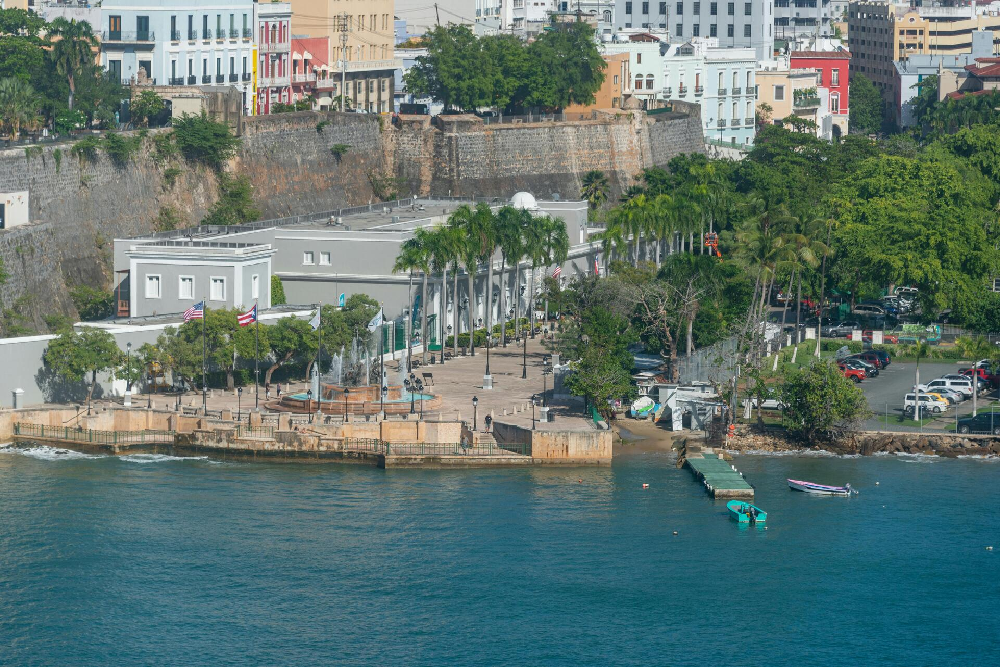

Chinchorreo: Puerto Rico's Weekend Seafood Ritual

Sunday in Puerto Rico has a ritual. Families load into cars sometime around midday, drive to the coast or the countryside, and spend the afternoon moving between small roadside bars and food shacks called chinchorros — eating fried fish, drinking cold beer, listening to music, and taking their time. This is chinchorreo, and it is among the most genuine expressions of Puerto Rican leisure culture there is.
What Is a Chinchorro?
A chinchorro, at its simplest, is an informal roadside eating and drinking spot — somewhere between a bar, a food stand, and a covered terrace. The word itself derives from chinchorro, a type of traditional hammock, which captures something of the unhurried spirit of the places. Some chinchorros are basic structures with plastic chairs and a hand-painted menu board. Others have evolved over decades into full restaurants with covered dining areas, sound systems, and lines out the door on Sunday afternoons. What they share is an emphasis on casual, communal, uncomplicated pleasure: fried seafood, cold drinks, and conversation.
The Main Routes
Joyuda (Cabo Rojo): The most celebrated chinchorreo route in Puerto Rico runs along the beach road through Joyuda, a strip near Cabo Rojo on the southwest coast. Dozens of seafood restaurants and bars face the bay, many specializing in the local catch. The specialties here run to whole fried fish (chillo frito), seafood asopao, and mofongo relleno stuffed with lobster or shrimp. The route is active year-round but most alive on weekend afternoons.
Boquerón (Cabo Rojo): Just south of Joyuda, the village of Boquerón has its own chinchorreo scene centered on the waterfront strip near the public beach. The atmosphere here is younger and louder on summer weekends, with music spilling out of competing bars and families wading in the calm bay between stops.
Piñones (Loíza): East of San Juan along PR-187, the Piñones area runs through the Loíza municipality and offers a completely different character — Afro-Puerto Rican culinary traditions, alcapurrias (fried yuca fritters stuffed with crab or meat), bacalaítos (salt cod fritters), and cold coconut drinks. Piñones is more accessible from San Juan than the southwest routes and fills on weekend afternoons with people who've been to the beach at Isla Verde.
What to Order
Standard chinchorreo food is fried, simple, and satisfying. Chillo frito (fried whole snapper) is the benchmark — if it's fresh and the oil is hot, it's one of the best things you can eat in Puerto Rico. Alcapurrias, bacalaítos, empanadillas (fried turnovers), and mofongo (mashed plantains) fill the table. Cold medalla beer or fresh-pressed sugarcane juice (guarapo) on a hot afternoon is standard. Eat slowly. Stay for another round.
Frequently Asked Questions
What is a chinchorro? A small, informal roadside bar and food shack serving fried seafood, mofongo, and cold beer — ranging from basic kiosks to established spots with covered seating.
What are the best chinchorreo routes? Joyuda and Boquerón in Cabo Rojo (southwest), and Piñones in Loíza (east of San Juan).
Related Reading
Explore Puerto Rico's coastal culture
See Sailing & Boat Tours →